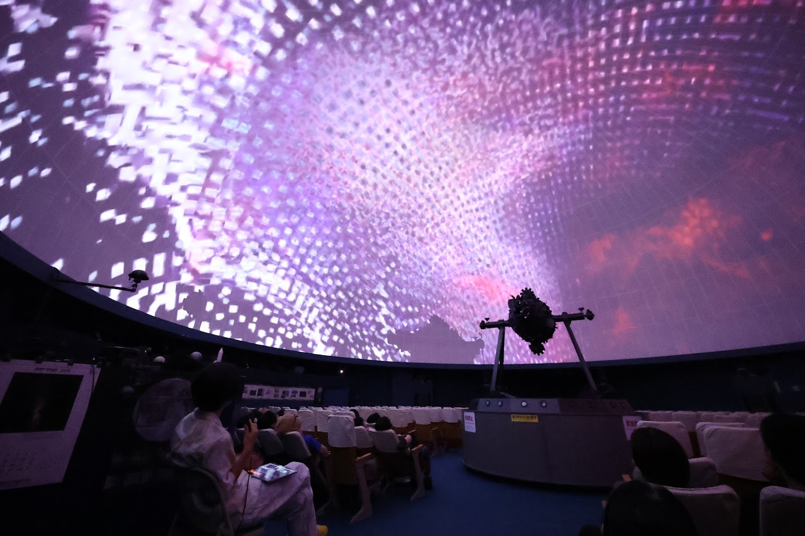
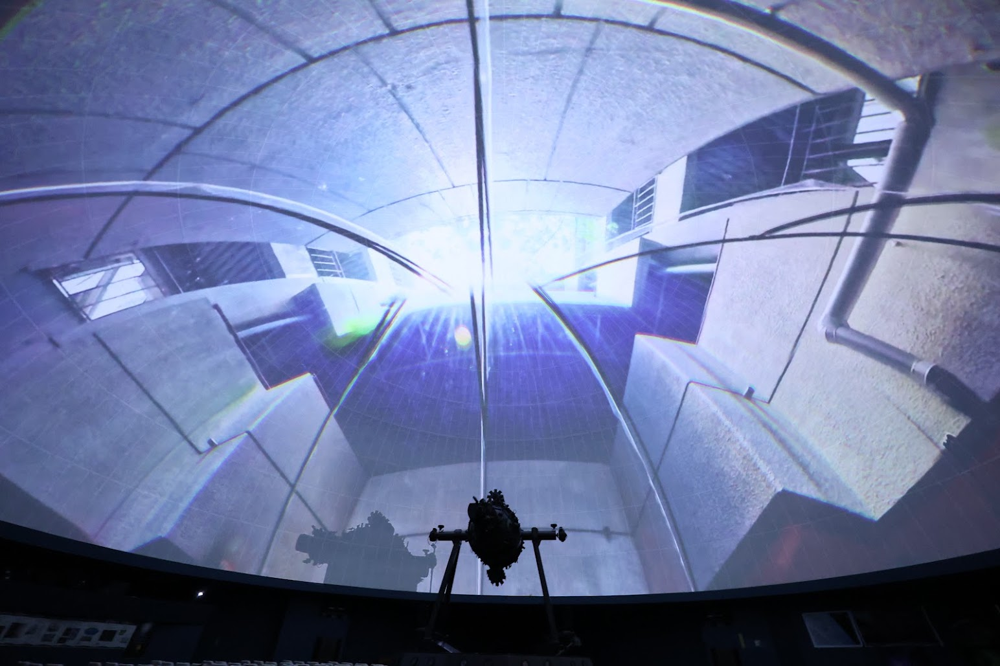
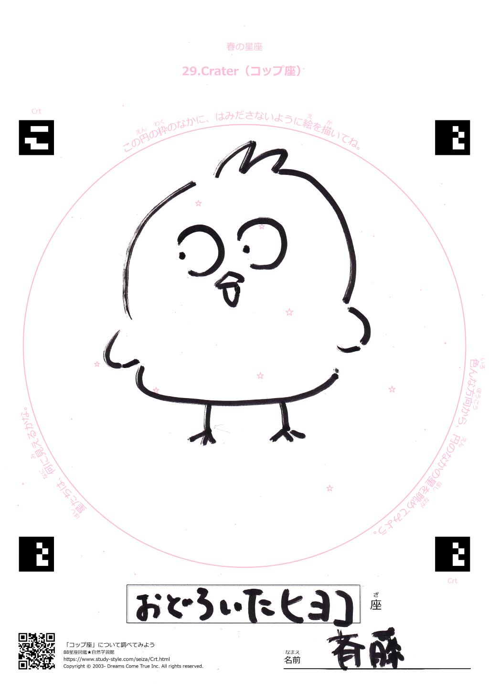
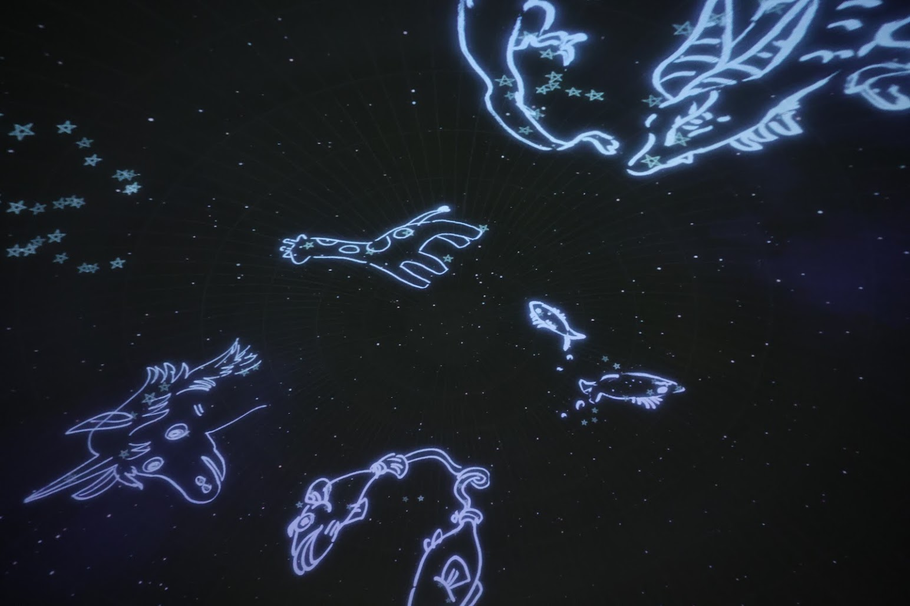
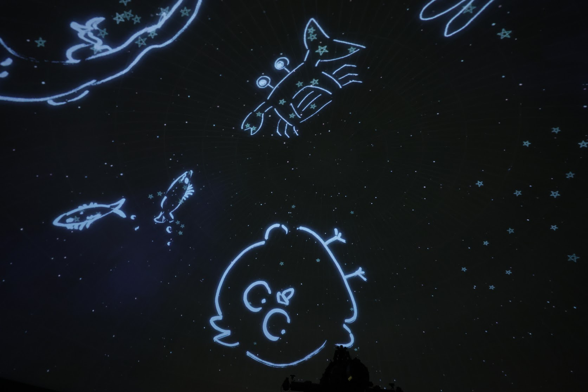

イベント概要
- 会期
- 2026年8月29日（土）・30日（日）
- 会場
- なかのZEROプラネタリウム 東京都中野区中野2-9-7
- 主催者
- 株式会社オリハルコンテクノロジーズ なかのZERO指定管理者（なかの応援パートナーズ）
- お問い合わせ先
- https://www.naka-lab.jp/contact
- 開催時間
- 8/29（土） 10:00 — 19:00 8/30（日） 10:00 — 17:00
- 入場
- 無料
プログラム
学生作品ドーム上映会会期中くり返し上映
次世代の映像クリエイターを目指す学生たちが手がけたフルドーム映像作品を、なかのZEROプラネタリウムのドームスクリーンいっぱいに上映します。
実写、CG、手描きアニメーションなど、それぞれが得意とする表現手法を用いて、自らの思想や感情、アイデアを形にした多彩な作品をお楽しみいただけます。ドーム映像ならではの空間表現を、ぜひご体感ください。
- 武蔵野美術大学
- 玉川大学
- 東京工芸大学


会場：西館 4階プラネタリウム
プラネタリウムに絵を描こう！ワークショップ企画
星の配置から想像をふくらませ、あなただけの星座を自由に描いてみましょう。
描いた作品はその場でスキャンされ、プラネタリウムの夜空に浮かび上がります。映像やデザインを学ぶ大学生が、みなさんの制作をお手伝いします。
子どもから大人まで、どなたでもご参加いただけます。



お絵かき会場：西館 中2階（自動販売機前のまるテーブル） 投影会場：西館 4階プラネタリウム
作品一覧
読み込み中…
上映スケジュール
1ターン（30分）の流れ両日・毎サイクル共通
1回30分のうち、ワークショップ投影は必ず学生作品の上映より先に流れます。中2階で描いた絵は、次に始まる30分の枠の冒頭で投影されます。
例：13:10に描いた絵は「13:30〜の回」で投影されます。
- ① 開始直後 ワークショップ投影（中2階で描いた絵が映ります） 10分ほど
- ② 続いて 学生作品上映 15分～20分ほど
1日目 8/29（土）10:00–19:00
| 時間 | ワークショップ投影タイム | 上映作品 |
|---|---|---|
| 10:00 – 10:30 | あり | 武蔵野美術大学① |
| 10:30 – 11:00 | あり | 玉川大学 |
| 11:00 – 11:30 | あり | 武蔵野美術大学② |
| 11:30 – 12:00 | あり | 東京工芸大学 |
| 12:00 – 12:30 | あり | 武蔵野美術大学③ |
| 12:30 – 13:00 | あり | 武蔵野美術大学① |
| 13:00 – 13:30 | あり | 玉川大学 |
| 13:30 – 14:00 | あり | 武蔵野美術大学② |
| 14:00 – 14:30 | あり | 東京工芸大学 |
| 14:30 – 15:00 | あり | 武蔵野美術大学③ |
| 15:00 – 15:30 | あり | 武蔵野美術大学① |
| 15:30 – 16:00 | あり | 玉川大学 |
| 16:00 – 16:30 | あり | 武蔵野美術大学② |
| 16:30 – 17:00 | あり | 東京工芸大学 |
| 17:00以降 連続上映（ワークショップ投影なし） | ||
| 17:00 – 17:16 | なし | 武蔵野美術大学③ |
| 17:16 – 17:33 | なし | 武蔵野美術大学① |
| 17:33 – 17:49 | なし | 玉川大学 |
| 17:49 – 18:09 | なし | 武蔵野美術大学② |
| 18:09 – 18:27 | なし | 東京工芸大学 |
| 18:27 – 18:43 | なし | 武蔵野美術大学③ |
| 18:43 – 19:01 | なし | 武蔵野美術大学① |
2日目 8/30（日）10:00–17:00
| 時間 | ワークショップ投影タイム | 上映作品 |
|---|---|---|
| 10:00 – 10:30 | あり | 武蔵野美術大学③ |
| 10:30 – 11:00 | あり | 玉川大学 |
| 11:00 – 11:30 | あり | 武蔵野美術大学② |
| 11:30 – 12:00 | あり | 東京工芸大学 |
| 12:00 – 12:30 | あり | 武蔵野美術大学① |
| 12:30 – 13:00 | あり | 武蔵野美術大学③ |
| 13:00 – 13:30 | あり | 玉川大学 |
| 13:30 – 14:00 | あり | 武蔵野美術大学② |
| 14:00 – 14:30 | あり | 東京工芸大学 |
| 14:30 – 15:00 | あり | 武蔵野美術大学① |
| 15:00 – 15:30 | あり | 武蔵野美術大学③ |
| 15:30 – 16:00 | あり | 玉川大学 |
| 16:00 – 16:30 | あり | 武蔵野美術大学② |
| 16:30 – 17:00 | あり | 東京工芸大学 |
2日目は17:00閉場のため、17:00以降の連続上映はありません。2日間を通じて、すべてのグループが均等に7回ずつ上映されます。
武蔵野美術大学 グループ分け
武蔵野美術大学①
- 櫻庭 幸明ポストストーン
- 岩崎 然主観・視界
- 高杉 陽仁・伊藤 璃大振り返らないで
- 黒川 和舞パススルー
- 天川 優奈petit aventure
- 森 大起点、線、面、天
- 星野 陽平Lint
武蔵野美術大学②
- 最所 晴樹跨
- 西沢 賛美（タイトル未定）
- 中村 文香ルテン
- 矢野 龍一怪雨
- 春口 侑愛・井上 優花トロッコ
- ソン ユリ・國吉 摩耶・菊地 由知江Eat Me If You Can!
- 関根 彩乃・村上 優・チェンルオハン・中村 文香よだかの星
武蔵野美術大学③
- A. F.flicker
- 宇野 可純夢中
- 北野 萌Nebbia
- ペン イハン3½
- 岡田 桃子・池谷 麻那Children's Dream
- イオアニス ポリフロノプロスFragments